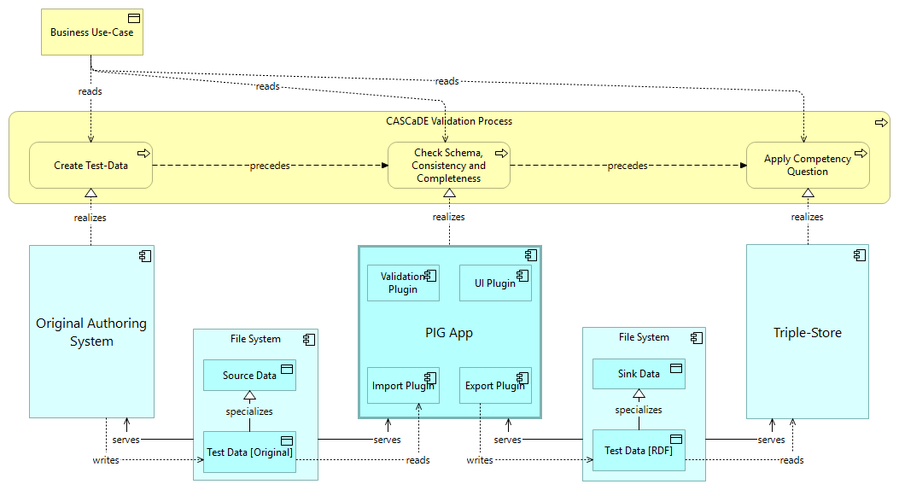

The model gives an overview of the use-cases. This model is authored with Archi using the ArchiMate 3.2 notation, then transformed to SpecIF via ArchiMate Open Exchange file format and then transformed to HTML. The PIG App will support a similar workflow (among others) for the source data formats chosen.
CASCaDE is a project to standardize collaboration in systems engineering with respect to data format and ontology. A Request for Proposal (RFP) has been accepted by OMG in December 2024. Information in different formats and from diverse sources are transformed and integrated to a common knowledge graph.
A publicly available reference implementation shall validate the concepts of the standard as developed by the CASCaDE submission team. Validation is successful, if real-world data is ingested and the information needs of all users in the product lifecycle are met. Users and software vendors are given the opportunity to influence the project to assure their ideas are taken aboard. A joint effort on fundamental features (where differentiation isn't possible anyways) avoids duplicate work, improves quality and assures interoperability.
A process to validate the conceptional and technical choices made by the standard in preparation. This is preliminary and needs further discussion and detailing with the target users. Ultimately, the standard must satisfy their use-cases and needs in general.
Subject to validation:

Once transformed to RDF/Turtle, still according to the PIG metamodel, user-defined competency questions shall be applied to the test-data. Those queries shall validate that the graph fulfills the information needs of the various user roles accessing the data. An important criterion is that the same (i.e. standard) queries yield the desired results with different data sets. Only then, normalization with repsect to syntax and semantics is successful. It is expected, however, that the competency questions, the queried, depend on the ontology with the the current set of preferred terms.
A set of use-cases describing the user's need. Must be exemplary (concrete), relevant and representative.
Once transformed according to the PIG metamodel, the data shall be checked with respect to schema (shape, format), consistency (constraints) and completeness. Both formally and by expert inspection.
Create test-data in original format as produced by popular authoring systems of the domain, for example IBM DOORS for requirement management or Cameo for systems engineering.
Initially, test-data should be small and cover relevant and typical aspects of the domain to drive and validate the development of transformations. Later on, real or near-real project data 'from the field' with growing complexity should be supplied.
A network file system. Consider to use
A web application for creating, reading, updating and deleting data elements per class. The app is configured by the classes loaded at initialization time. The classes govern the choice and the dialog layout for modifying the data. Thus, the same software is used for more or less complex applications.
A standard database for knowledge graphs, e.g. Apache Fuseki.